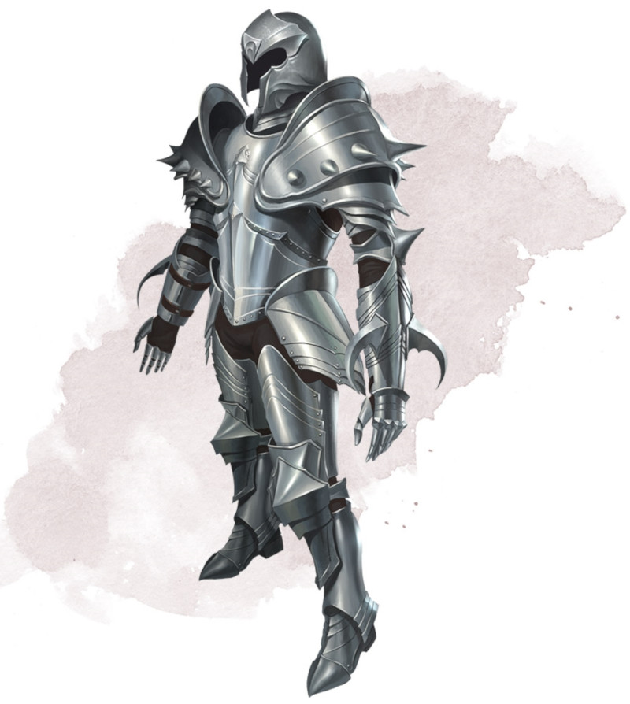

Demon Armor
Armor (plate), very rare (requires attunement)
While wearing this armor, you gain a +1 bonus to AC, and you can understand and speak Abyssal. In addition, the armor's clawed gauntlets turn unarmed strikes with your hands into magic weapons that deal slashing damage, with a +1 bonus to attack rolls and damage rolls and a damage die of 1d8.
Curse. Once you don this cursed armor, you can't doff it unless you are targeted by the remove curse spell or similar magic. While wearing the armor, you have disadvantage on attack rolls against demons and on saving throws against their spells and special abilities.
Curse. Once you don this cursed armor, you can't doff it unless you are targeted by the remove curse spell or similar magic. While wearing the armor, you have disadvantage on attack rolls against demons and on saving throws against their spells and special abilities.
Dungeon Master´s Guide (SRD)
